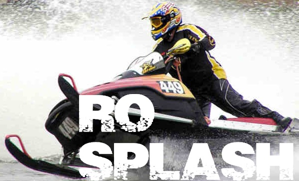
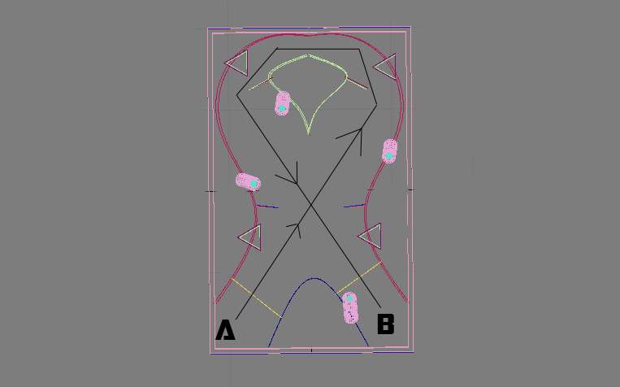
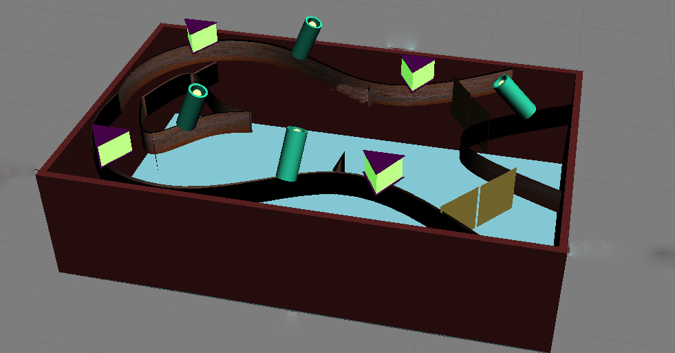
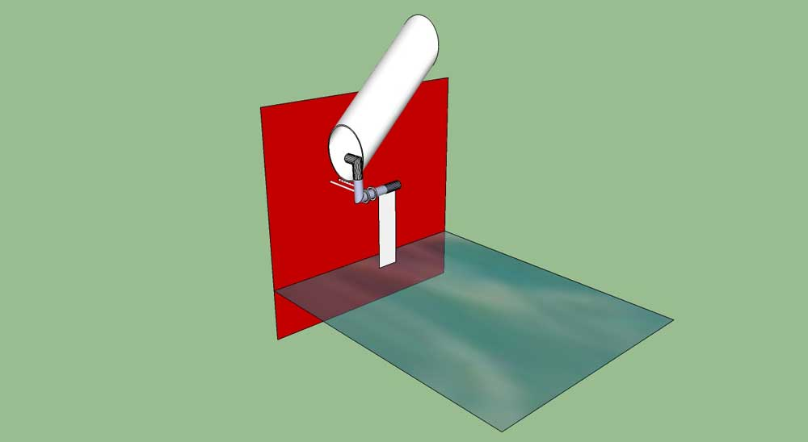
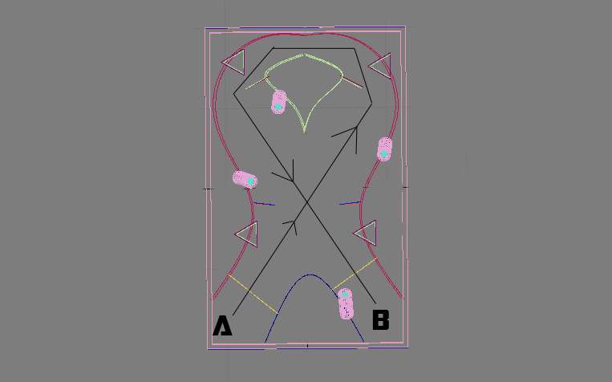
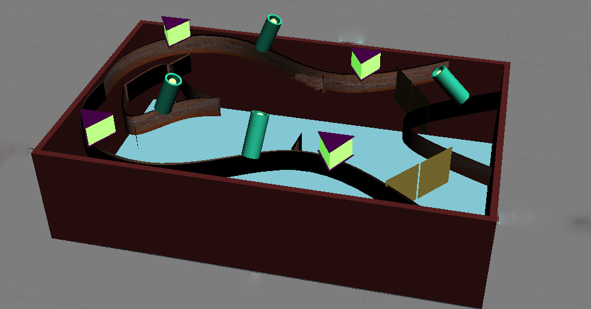
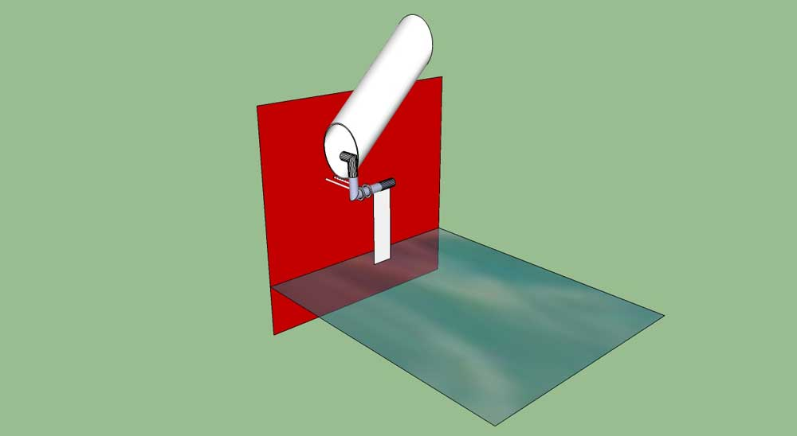

Figure 1:
 The bot should stay afloat on water.
The bot should be within the dimensions of 25cm x 25cm x 20cm.
Once the event commences, the bot can exceed the above mentioned dimension limit.
The bot should be capable of transferring balls from one place to another (required in Round 1).
No Lego kits or TRI kits or readymade components are allowed to be used, although readymade gear boxes can be used.
At any part of the connections, the voltage difference should not exceed 24 volts. The connections and the power supply will be checked by the volunteers before the starting of the event. Since the entire arena is made up of iron, it is strictly advised that all connections are made leak and water proof.
The bot should not employ any mechanism that might damage the arena. Points will be deducted for the same.
A 220 volt AC supply will be provided.
It is advised that minimum length of the wire that connects the bot to the remote should be 6 meters. The greater-the better.
The arena has a size of 8' x 5' x 2'.
The water level will be approximately 1'6" from the bottom of the arena.
In this preliminary round, a bot has to travel in the specified path as shown in figure 1. The path is surrounded on both sides by metal walls which run through the entire path.
The metal walls have a height of 4 inches above the surface of water and are submerged by another 4 inches below the surface of water.
The width of the path between the red walls is about 1’ 6”.
The bot will have to start from point A, maneuver through the whole path, perform few tasks at some different locations of the path (which includes crossing check points, ringing the buzzers placed at different locations of the path by pushing the switch) and reach the ending point B.
Points scored by each bot will depend upon the time taken by the bot to complete the task (as less as possible) & ringing the buzzer at given places.
Figure 2:

In this round, the bot has to travel in the specified path (as directed in the figure), starting from point A and ending at point B. The path is surrounded on both sides by red walls which run through the entire path.
The red walls have a height of 4 inches above the surface of water and are submerged by another 4 inches below the surface of water, similar to round 1.
There will be projections as similar to Round 1 path (see points 1, 2, 3, 4, 5 and 6 in Figure). Touching any of the two plates will cost negative points each time.
There will be ONLY one buzzer device which the bot has to ring, for which points would be awarded.
The width of the path at point A (i.e. the starting point) is 2 feet .This bulgy part contains the ONLY buzzer device. Rest of the path, after the starting point till the beginning of the circular part has a width of 1'6'' or 1.5 feet. This part consists of the rectangular projections. The main part of the task comes here: At points 7, 8, 9 and 10 there are four ball stoppers with a lever mechanism as shown in the figure below.
Figure 3:

The ball stoppers contain a piece of hollow cylinder which consists of few standard sized TT balls (having an approx. diameter of 4 cm). The stoppers consists of a lever mechanism with a plate (of dimension 3.5” x 1”). The whole mechanism is attached to the circular metallic walls of the arena with the help of two rings, so that the plate and hence the rod which is stopping the balls from falling into water, are freely movable. The bottom of the plate just touches the surface of the water. Whenever a force perpendicular to the plate is given, the plate moves inwards towards the wall, releasing the stopper and hence the balls in the cylinder fall into water. The balls are marked with both positive as well as negative points (disclosed at the day of the event). The task is to collect and place as many balls carrying positive points at POINT B. Point B is a rectangular area occupying a corner of the arena. For a ball to be counted, it has to be fully inside this area. NOTE: In the arena these ball stoppers are replaced by a black painted block, please do not panic seeing these missing. Just visualize the ball stoppers to be in these positions as they will be at the day of the event.
Figure 4:

Event Description
In this event, the bot has to complete a path [starting from point (A) & ending at point (B) as shown in fig. 2] inside a metallic arena full of water, while being floated and performing basic tasks in water. The tasks may vary from just maneuvering the bot according to the path, hitting the switches & ringing the buzzers etc. The tasks will get much more challenging and interesting in further rounds. This event gives emphasis on the agility, strength and stability of the bot in water when subjected to perform different tasks in different rounds. Our event ensures that the best bot wins.
Figure 1:

Bot Specifications
Arena Specifications
Event Rounds
- ROUND 1: PRELIMS
- ROUND 2: FINALS
ROUND 1
Figure 2:

Final Round
Figure 3:

The ball stoppers contain a piece of hollow cylinder which consists of few standard sized TT balls (having an approx. diameter of 4 cm). The stoppers consists of a lever mechanism with a plate (of dimension 3.5” x 1”). The whole mechanism is attached to the circular metallic walls of the arena with the help of two rings, so that the plate and hence the rod which is stopping the balls from falling into water, are freely movable. The bottom of the plate just touches the surface of the water. Whenever a force perpendicular to the plate is given, the plate moves inwards towards the wall, releasing the stopper and hence the balls in the cylinder fall into water. The balls are marked with both positive as well as negative points (disclosed at the day of the event). The task is to collect and place as many balls carrying positive points at POINT B. Point B is a rectangular area occupying a corner of the arena. For a ball to be counted, it has to be fully inside this area. NOTE: In the arena these ball stoppers are replaced by a black painted block, please do not panic seeing these missing. Just visualize the ball stoppers to be in these positions as they will be at the day of the event.
Figure 4:
General Rules
- A team may consist of a maximum of 4 participants who can be from different institutes.
- No member can be a part of more than one team.
- A robot cannot be shared by two or more teams.
- Any damage to the arena can lead to penalties.
- It is strictly advised that all connections are to be made leak and water proof as the arena is made up of iron.
Event Co-ordinators
Arijit Mukhopadhay
9836655803
Ahan Roy
9051479694
Sumanta Banerjee
9007810365